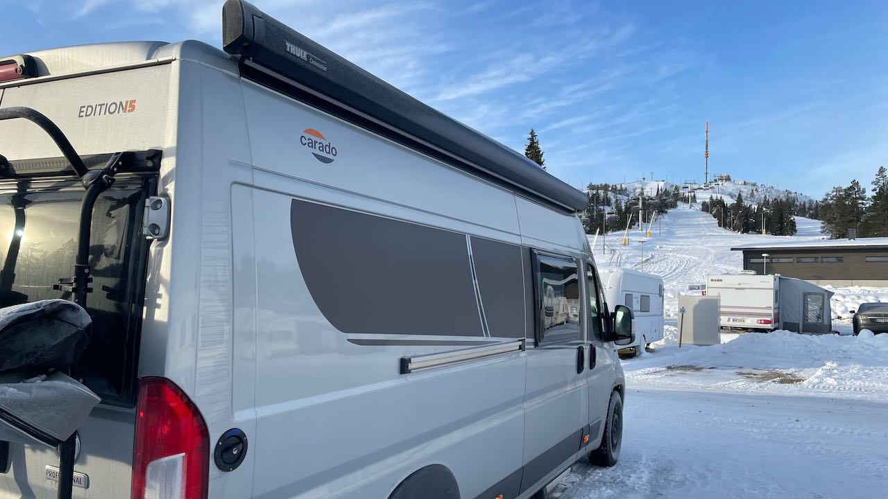

Rukan uusi vaunualue

Vierailimme Rukan uudella vaunualueella syyslomalla. Lunta oli maassa mukavasti ja ensimmäiset rinteet jo auki, joten reissustamme tuli kunnon laskettelumatka.
Suurin osa alueesta oli varattu kausipaikkalaisille, mutta päiväpaikkojakin oli tarjolla. Alue on suoraan rinteiden juurella ja iltaisin seurasimme Suomen nopeimman 8-paikkaisen tuolihissin rakentamista. Maston rinteet eivät vielä olleet auki, joten aamuisin siirryimme Ruka Villageen, josta pääsimme gondolilla Saaruan rinteille lautailemaan.
Parasta Rukan vaunualueella olivat hyvin hoidetut ja siistit palvelut. Vuonna 2019 rakennettu huoltorakennus oli kuin uusi ja siellä oli hyvät tilat kokkailla laskupäivän jälkeen päivällistä. Sauna oli iso, joten mukaan mahtui aina vielä pari lautailijaa. Löylyt olivat omaan makuun hieman kuuman puoleiset ja mittari heilui aina jossain 90 ja 100 asteen välillä.
Pesukoneet, kuivausrummut ja kuivauskaappi kuuluivat huoltorakennuksen varusteisiin ja niille löytyikin aina laskupäivän jälkeen käyttöä. Kun lunta vain saadaan lisää ja Maston rinteet auki, niin Ruka on epäilemättä kauden parhaita perhekohteita lasketteleville karavaanareille.